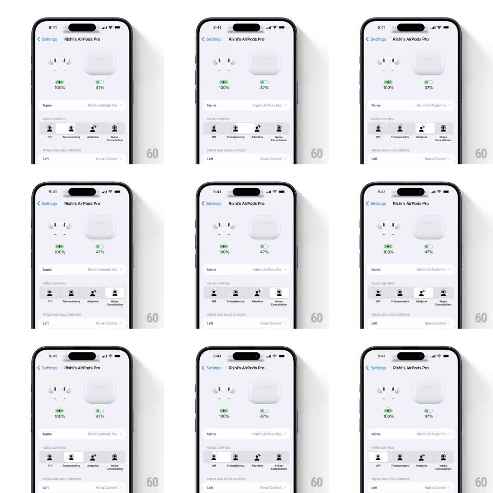

Media
Frame-by-frame

Rebuild this interaction 1:1: the AirPods Pro noise-control selector in iOS Settings - a four-option segmented control (Off / Transparency / Adaptive / Noise Cancellation) whose selection pill slides between segments with a stretchy, squash-and-stretch motion.

Rebuild this interaction 1:1: the AirPods Pro noise-control selector in iOS Settings - a four-option segmented control (Off / Transparency / Adaptive / Noise Cancellation) whose selection pill slides between segments with a stretchy, squash-and-stretch motion. ## Integration Integration: stack-agnostic spec - springs given as stiffness/damping, timed motions as duration + curve; map every value to your framework and animation library of choice. ## Scene iOS Settings > Rishi's AirPods Pro: AirPods + case artwork with battery percentages (100% / 47%), Name row, then the NOISE CONTROL section - four segments, each with a person-glyph icon and label. Below: PRESS AND HOLD AIRPODS row. ## Motion spec Pattern: stretchy sliding selection pill. - Tap a segment: the white selection pill unhooks from the current segment and slides horizontally to the tapped one (spring ~340/22, ~380ms), stretching along its travel axis mid-flight (scaleX up to ~1.25, scaleY ~0.85) and squashing on landing (scaleX 0.92 -> 1). - The tapped segment's icon + label darken as the pill arrives (crossfade 150ms, delayed ~100ms so the pill leads); the old segment's label fades to gray in sync. - A light haptic fires on landing. - Tapping the CURRENT segment does nothing - no wiggle, no pulse. - Dragging across segments: the pill tracks the finger continuously with the same stretch, committing on release to the nearest segment. ## Calibration - The pill stretches proportional to travel distance - a one-segment hop barely stretches; an Off -> Noise Cancellation jump stretches fully. - Icon glyphs are identical per segment except color; state is carried by pill + label color only. ## Reduced motion Pill slides without squash/stretch; labels crossfade. ## Don't miss - The control sits inside a standard grouped-settings section - keep iOS list margins and section headers. - The battery artwork above is static; the control is the only animated element.